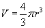
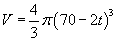
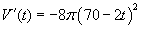
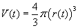
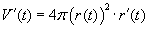

This device cannot display Java animations. The above is a substitute static image
1. Initial approach
The applet shows an image of the snowball with an initial radius of 70 cm. One approach to finding the rate at which the volume changes is to figure out an equation for the volume, plug into that a formula for how the radius changes with time, thus giving a formula for how the volume changes with time. We know that the volume of a sphere is given by

Since the snowball starts out with a radius of 70 cm and shrinks by 2 cm per minute, then
r = 70 – 2t,
where
t is the time in minutes since the snowball started melting. If we substitute
r into the formula for
V
we get

You can see this expression displayed in the applet. Taking the derivative with respect to
t we get

which is also displayed by the applet (although in unsimplified form). We can now plug in any value of
t we want, to find out the rate of change of the volume.
On the applet, click the Start button. This runs an animation that changes t from 0 to 35 (when the snowball is gone). The top graph is V(t) and the bottom graph is V ' (t). Also shown on the graphs are the values of V(t), r(t), V ' (t) and r' (t). Notice that in this example, r' (t) is constant. If we wanted to find the rate at which the volume is changing when the snowball has a radius of 20 cm, we could just plug 20 in for r in the formula for r and solve for t (finding that t = 25 when r = 20), then plug t into the formula for V '. On the applet, you could also run the animation (set the rate to Slow instead of Moderate), watch the value of r, and click the Pause button when r = 20 or is close to it. You can then type in different values for t until you find one that makes r = 20, and look at the value of V ' that is displayed.
2. Using derivatives
Another approach is to take the derivative of the volume formula before plugging in the formula for r.
Select the second example from the drop down menu at the top.
Here, we treat both V and r as functions of t, so the formula for the volume becomes

The derivative of this, with respect to
t and using the chain rule, becomes

Both of these are displayed in the applet (again, with the derivative not being simplified). Suppose that we wanted to find
V ' when
r = 20, instead of at a specific time. This formula is actually more useful, since we can plug in 20 for
r(
t) and -2 for
r'(
t), without even needing to know
t.
3. Using only the derivative
Select the third example. What happens if we still want to find V ' when r = 20, but now all we know about r ' is that it equals -3 when r = 20? If we no longer know the formula for r (t), we can still answer this question if we use the formula for V ' (t) that we found in the previous step, which doesn't depend on us knowing the formula for r. All we need is to plug in a value for r and the corresponding value for r '.
To find this solution graphically, set the animation speed to Slow (instead of Moderate), then Start it running. Watch the displayed value for r, and click Pause when r is about 20. You can then type in values for t until you get r = 20 (hint: try t = 8.35175311). Then you can read off the value for V ' on the display. These types of problems are called related rates problems because you know a rate and want to find another rate that is related to it.
Other 'Applications of Differentiation' topics
(C) 2011 Copyright Math Open Reference.
All rights reserved